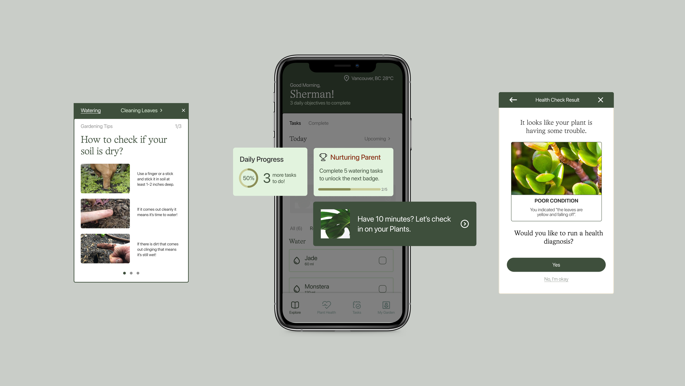
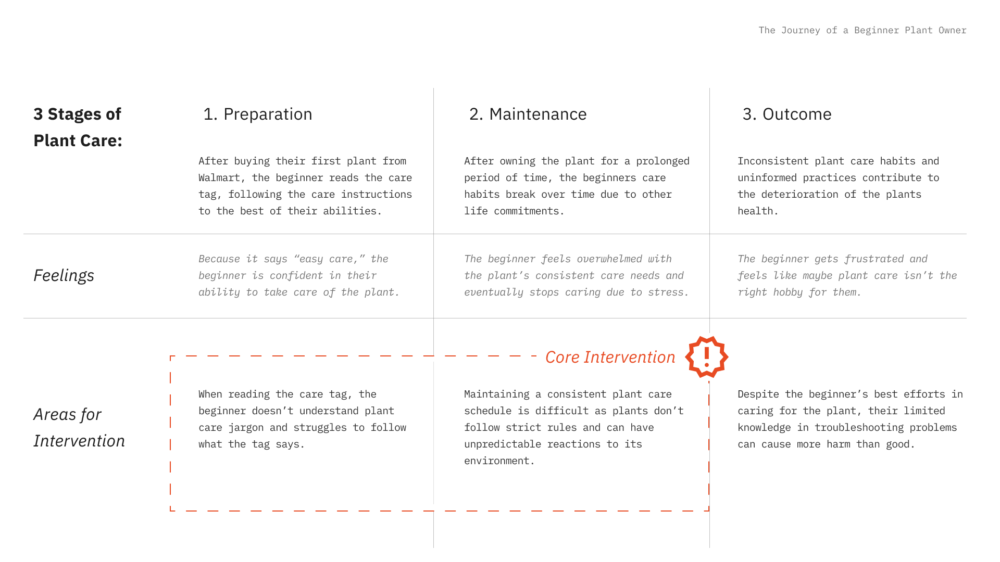
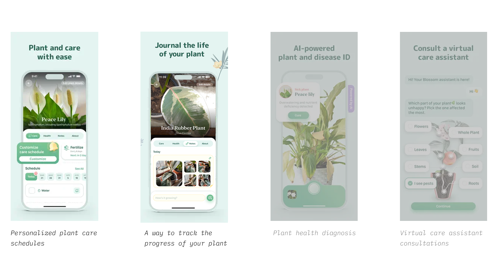
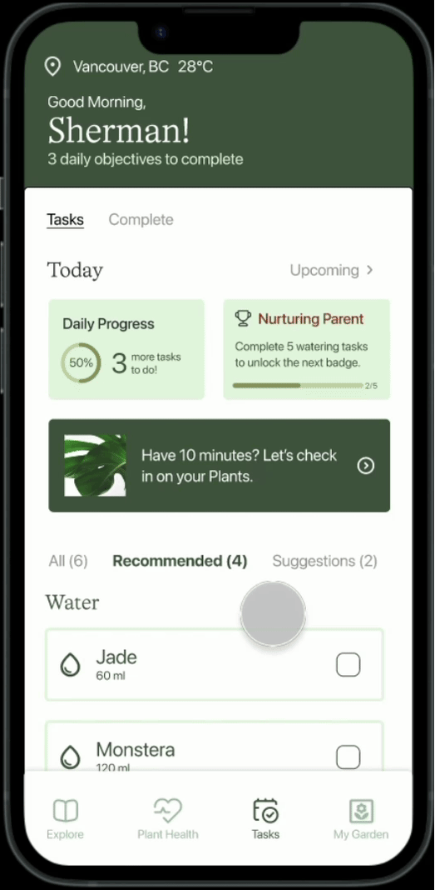
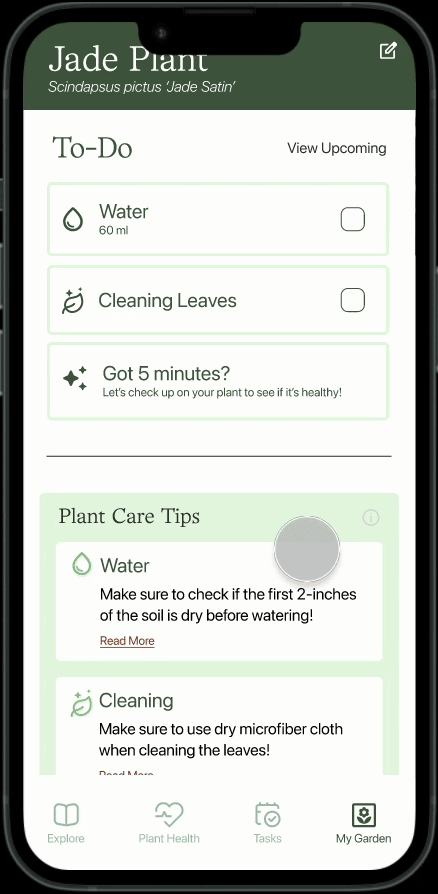
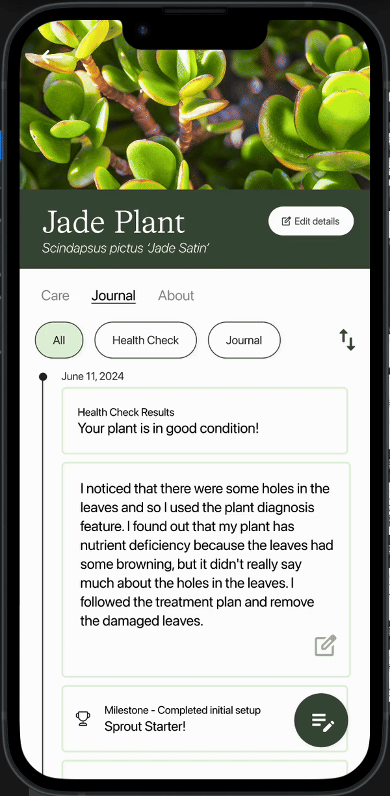
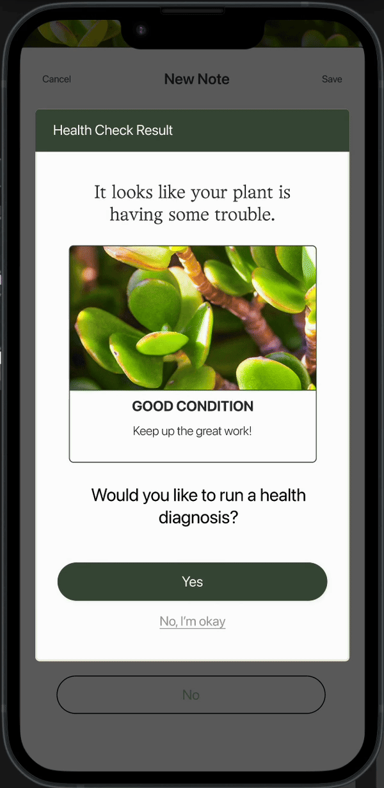
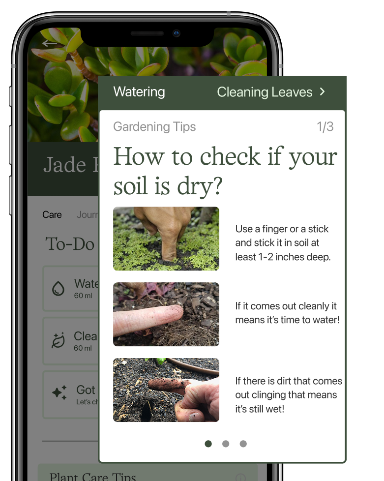

JC
JC


Prosper Vancouver
Creating a non-interface solution for Prosper Vancouver to increase engagement and retention

UX Researcher
UI Designer
Wireframing
Prototyper
User Journey
Arielle Beltran
Tim Chen
Sergey Khegay
Patricia Sugiarta
Joycelyn Tng
Academic Project
2 Weeks
June 2024
Figma
Figjam
Is a plant care app that provides a plant identifier and a reliable plant guide. It provides how-tos, useful plant care tips and reminders to water your greenery on time without drowning it.
The goalis to find a problem space, show if there is a need for an intervention, and design a solution that addresses those needs.
RESEARCH
RESEARCH
I reviewed surveys, online articles, and YouTube videos, as well as analyzed existing apps in the market, such as Planta and PictureThis, to better understand the common struggles and challenges users encounter. Additionally, I explored Blossom's reviews to identify the app’s current limitations.
We found that plant owners use Blossom as a tool to plan, keep track of schedules, and keep their plants healthy. However, due to the lack of support in their plant health related sections, users are unable to maximize the value of Blossom, and in turn struggle to keep their plants healthy.
RESEARCH
To narrow down our focus, we identified different types of plant owners and categorized them with 3 stages of plant care to understand how each stage affect different users. From this, we decided to focus on beginner, uninformed users.
RESEARCH
My team and I created a user persona and journey map to identify areas new users may struggle getting into plant care.
After, I developed an additional journey map to analyze the experience of using the Blossom app.
RESEARCH
I explored the app and tested all of its features. I ideated potential useful features that could be added. We then created a map of the app’s structure and reconvened to affinity group. We noted which features we considered the most important to focus on.
“How might we provide long-term guidance and support for dedicated beginner indoor plant owners to help improve their plants health and longevity?"
"How might we build foundational knowledge and habits over time in order to help users prevent, rather than react to indoor plant death and disease?"
DESIGNING
Since many new plant owners start without knowing what to do, we narrowed in on helping them gain the essential knowledge they need, and delivering it in a way that is easy to understand.
From a survey of 1000 gardeners in US, Home Advisor, 1,000 gardeners with 6 months to 1 year of experience indicated that
"…the hardest part of becoming a lifelong gardener is making it through the first year."

Areas of Intervention
DESIGNING
For our intervention, we focused on improving the plant care schedule and journal features.
I created low-fidelity wireframes for the maintenance checklist within the journal. I tested various ways of displaying the information, and organized playtesting sessions to gather feedback and iterate on the design.
After, I developed the final prototypes for the maintenance checklist and journal layout, refining how users access the feature and how the information is presented. I followed the design direction to ensure that every page is consistent.

Blossom's Main Features
Our solution simplifies plant care instructions by reducing jargon. We improved Blossom's features to help users develop consistent habits and support long-term plant health and growth.

Task Checklist

Plant Care Tips

Maintenance Checklist

Journal Page
FEATURES
Maintenance Checklist
Progress Tracker & Achievements

Care Tips
OVERVIEW - APP PAGES
Through this project, I realized how important it is to clearly define a problem space and find a meaningful intervention. Early on, we explored many different organizations and ideas, but not all of them led to a strong or feasible need. This helped me understand that a problem needs to be realistic, backed by research, and something design can impact to create meaningful experiences.
I would like to continue developing how the maintenance checklist information is presented within the journal timeline page. Due to time constraints, we weren’t able to fully explore this. I would also conduct a survey with beginner or first-time plant owners to better understand what they know and don’t know about plant care. This would help gather more insights and also allow for feedback on our redesign and layout.
Creating a non-interface solution for Prosper Vancouver to increase engagement and retention
Designing a microsite for beginner family campers. It informs them about various camping sites